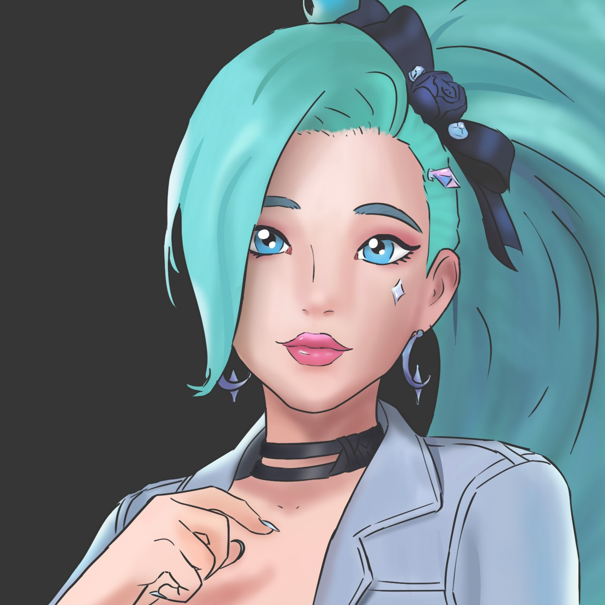
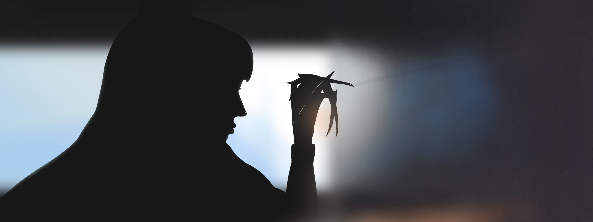
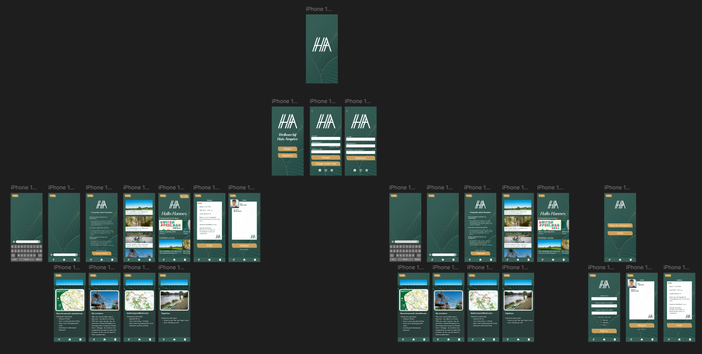
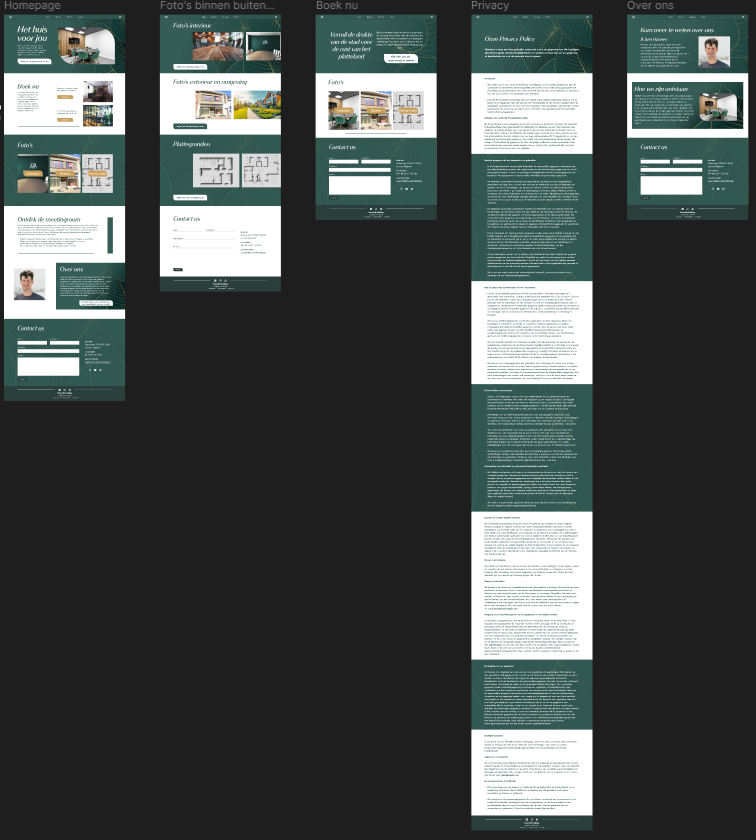

About me
Ik ben een grafisch gelegde student uit Nethen, een klein dorpje op de taalgrens nog net in Wallonië. Hier heb ik heel mijn leven gewoond. Van mijn 13 ging ik elke Zomervakantie naar Digitale tekenkampen of schilderkampen. Design is altijd al mijn interesse geweest, en hier wil ik later op voortbouwen. Verder ben ik een rustig persoon met geduld, ik probeer nooit te stressen over iets, want dan gaan er dingen mis. Ik ga door het leven met een positieve instelling.
Education
Education
Education
Education
Education
Education
In het 1ste en 2de middelbaar heb ik op het Heilig Hart in Heverlee gezeten, daar heb ik een algemene richting Moderne wetenschappe gedaan. Mijn favoriete vak was toen de kunst les, die we maar 2 uur hadden op een Woensdag.
Voor het 3de tot 6de middelbaar ben ik een helemaal andere kant uitgegaan, en heb ik Electromechanica gedaan in Don Bosco Haacht. Hier deden we niks met kunst, maar wel een beetje 3D Ontwerpen van parts voor machinerij.
Dan voor mijn eerste jaar Hoge School, ben ik naar Artevelde gegaan in Gent, waar ik de richting Grafisch en Digitale Media heb gedaan. Dit volgde niet op, op Electromechanica, maar was wel meer iets voor mij. Dit is maar 1 jaar omdat ik ben gestopt na de examens in Juli.
Education
2014 - 2015
Heilig Hart Heverlee
2016 - 2020
Don Bosco Haacht
2020 - 2021
Artevelde Hogeschool Gent
Assignments
Dit zijn wat illustraties dat ik in mijn vrije tijd heb gemaakt.
 School assignments
Eindreflectie WPL1
Eindreflectie Portfolio Werkplekleren 1
Wat heb ik geleerd op organisatorisch vlak?
Ik heb bijgeleerd dat ik een rustig en kalm persoon ben, dat is belangrijk vind ik persoonlijk omdat als je in een groep werkt met meerdere mensen waarmee je nog niet mee hebt samengewerkt, en je weet hun persoonlijkheden, hun sterktes en zwaktes nog niet. Dan is het belangrijk om kalm te blijven en wat analyseren hoe ze het best in het team zouden passen, en welke taken je hun mee zou moeten ondersteunen. Ik ben zelf geen leider, ik geef niet graag bevelen of zeg niet graag wat andere mensen moeten doen. Wat ik wel doe is uit mijn eigen ervaring methodes tonen die misschien makkelijker of beter zouden zijn in dat scenario. Maar ik ben voor een volger. Als het duidelijk is uitgelegd zal ik het doen.
Wat heb ik geleerd op persoonlijk vlak?
Om op mijn vorige paragraaf verder te gaan. Ik heb geleerd waar ik thuis hoor in een groep, en wat mijn uitstraling is. Ik ben de persoon die de groep wat levendig houdt, met af en toe iets grappig te zeggen of een domme opmerking. Ook heb ik gezien dat omdat ik wat ouder ben dat mijn groepsgenoten mijn mening precies meer volgde. Dit klinkt misschien delusional, maar ik had dat precies opgevangen.
Wat heb ik geleerd op technisch vlak?
Ik heb leren werken met Scrum, dit hadden we gedaan via Trello, dit was wel tof om te ontdekken en was handig om onze voortgang te zien. Tijdens WPL heb ik ook beter leren werken met Figma, ik vond mijn opdrachten maken op Figma leuker dan het te coderen in HTML en CSS, omdat het sneller is om iets te visualiseren. Ook heb ik wat beter leren werken met HTML en CSS, we konden vragen stellen tijdens de lessen, hier heb ik gebruik van gemaakt om mijn skills uit te bereiden.
Hoe zag ik mijzelf groeien tijdens Werkplekleren 1?
Ik zag mijzelf wat professioneler worden, ik ging optijd slapen om goed optijd te zijn voor de lessen. Ook werd ik wat serieuzer op de momenten dat het nodig was. Voor de rest ben ik mijzelf wat gebleven
Welke professionele kwaliteiten (soft and hard skills) bezig je en kwamen van pas tijdens Werkplekleren 1?
Ik had al een jaar in Gent een soort gelijkaardige richting gedaan, dus hier had ik wat skills geleerd zoals basis HTML en CSS, Photoshop en Illustrator had ik hier ook al deels gezien. Qua softskills kan ik kalm blijven in stressvolle momenten. Ik ben makkelijk aanspreekbaar en straal (werd mij verteld) vriendschap uit. Ik ging ook al jaren naar een digitaal teken kamp waar ik wat creatiever door ben geworden.
Welke professionele kwaliteiten (soft and hard skills) wens je nog uit te breiden tijdens Werkplekleren 2
Ik zou graag beter willen kunnen praten met mensen, ik word nerveus als ik moet praten tegen grote groepen, dit is niet echt professioneel, hier zou ik dus graag nog aan willen werken. En mijn professionele uitstraling, dus hoe ik praat, hoe ik beweeg met mijn handen, dus in kort mijn lichaamstaal
Waar wens ik graag nog wat extra informatie over? Wat heb ik gemist in Werkplekleren 1
Ik dacht dat we meer gingen leren hoe een bedrijf in elkaar steekt enzo, maar dit zagen we beter bij IT-Organisation. Dus eigenlijk heb ik niet echt iets gemist.
Werkplek Leren 2
De case waar ik aan meewerkte was Case 12, de luxe meetingroom.
Samen met de groep hadden we het "Huis Ampère" genoemd.
Voor dit project moesten we een werkende website maken, en een app die alleen op figma moest werken.
De huisstijl die Hannes ons had meegeleverd was de Art Deco stijl.
Dus hiermee zijn we aan de slag gegaan.

Dit zijn de designs van de App

Dit zijn de designs van de Website
Ik heb vooral gewerkt aan het design van de website.
Daarnaast heb ik het design van de App gelijk gesteld met hoe de website er uit ziet.
Ook heb ik aan het Brandbook gewerkt, zodat het er goed uitzag, klaar om te printen.
Eindreflectie WPL2
Reflectie op de X-factor
(em)passie
Dit project heeft mijn passie voor ontwerpen getest, ik was nooit compleet tevreden over wat ik had gemaakt.
Daarom vond ik feedback tijdens de sprint reviews altijd tof om te krijgen, omdat ik dan wist of ik goed bezig was.
ondernemend & innovatief
Samen met mijn 3 collega's hebben we dit project tot een mooi einde gebracht. Samen allemaal nagedacht over hoe het er ging uitzien, en wat er op de site moest komen. Dit vond ik tof om te doen.
samen(net)werken
In onze groep kwamen we heel goed overeen, er waren geen spanningen, we zaten niet op elkaars vingers te kijken, en iedereen deed hun taak wel.
Dat is belangrijk in een team.
(multi)disciplinair
We deden allemaal waar we goed in waren, de taken waren goed verdeeld, niemand deed kinderachtig als die iets minder tof vond om te doen.
Reflectie op je persoonlijke softskills
STARR-Methode
Situatie: Ik kom als introvert in een groep terecht waar ik niemand ken.
Taak: Mijn taak was om een groepswerk van 4 sprints te maken met hun.
Actie: Ik heb hun wat leren kennen in het begin, en hun mij. Joran had mij dan wat meegenomen mee in het verenigings leven, hier heb ik veel mensen leren kennen en was ik hard uit mijn comfort zone. Maar ben ik wel goed gevorderd op socialer zijn. Ook op de corda campus zelf ben ik wat meer extraverter geworden door af en toe zelf naar mensen te gaan en ermee beginnen praten.
Resultaat: Ik maakte meer vrienden, mensen kwamen meer met mij praten, zowat iedereen kende mij wel.
Reflectie: Hier ben ik wel tevreden van, ik had tijdens een van mijn presentaties van Communication Skills gevraagd aan mijn klasgenoten om mij zo wat meer uit mijn comfort zone te halen. Wat sommige ook hebben gedaan, en hier ben ik hun dankbaar voor.
Het was een goed jaar voor mijn softskills.
Algemene reflectie WPL2
Positieve realisaties
Wat mij zeker opviel is dat ik heel makkelijk vrienden maak. Het klinkt misschien self centered, maar mensen waren precies blij om mij te zien aankomen. Constant "Yoo Mitch!", "Heeey Michiel" enzo. Dit was tof.
Ook grappig dat zoveel mensen mij heel het jaar met mijn bijnaam "Mitch" hadden aangesproken.
Moeilijke punten
Waar ik het wat moeilijker mee had was dus content zijn met de designs dat ik maakte.
En het is altijd lastig in een groep om dezelfde visie te hebben van hoe iets er uit moet zien. Niet iedereen ziet een design hetzelfde. Dus het was soms wat lastig om naar elkaars wens iets te maken.
Maar dat is allemaal goed gekomen!
Samenwerking
Het was een super toffe groep om mee samen te werken, we namen samen pauzes enzo. We konden lachen met elkaar. Er was geen drama, wat bij veel groepen wel was.
Ik zou wel willen blijven werken in zo'n groep.
Beeld van de job
WPL2 was denk ik wel een goede representatie van hoe het gaat zijn om later in een groep te moeten werken.
De teamsfeer zat goed, en dat is wat ik het belangrijkste vind aan een job.